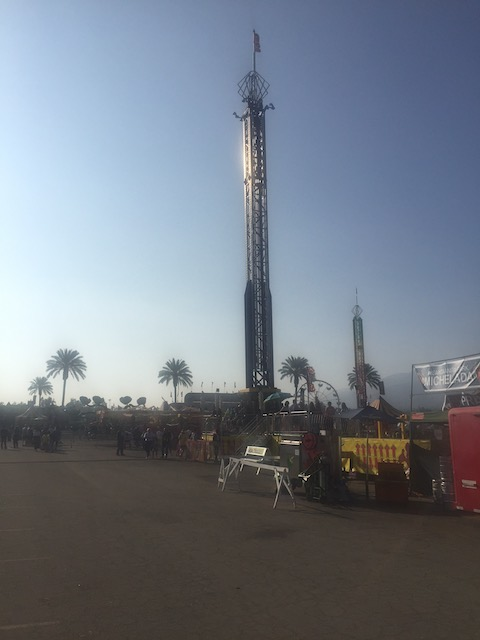

| |
Raging Waters 2021
 All right. We're back at Raging Waters. This is California's biggest water park, though I have never been the biggest fan. But it has been 11 years since my last visit. And they did add a Water Coaster in that time frame. Plus, we had Palace Season Passes from our East Coast Trip this summer and could get in for free. So....this is the perfect time to go back.
All right. We're back at Raging Waters. This is California's biggest water park, though I have never been the biggest fan. But it has been 11 years since my last visit. And they did add a Water Coaster in that time frame. Plus, we had Palace Season Passes from our East Coast Trip this summer and could get in for free. So....this is the perfect time to go back.
GOD DAMN IT!!! THE WATER COASTER IS CLOSED!!? IT'S NOT EVEN NEW!!! THIS THING HAS BEEN OPEN FOR 6 YEARS!!! Ugh. There goes the big thing I came back for. >=(
Yep. But not only that, but my favorite water slide and their star attraction from last time, Speed Slides is ALSO closed today. Grr. >=(
Ugh. So already, Raging Waters has proven yet again to be a dissapointment with all their best rides closed. But hey. We're already here. So let's still have fun.
All right. First slide of the day, Dragons Den. It's fun, but I just miss the Body Bowls like Bazooka Bowls. Hell, even among the other Tube Toilet Bowls, there are better options.
So they decided to take their old Drop Out slide, and replace it with a trap door slide. I will admit. I do really enjoy Trap Door Slides and this'll definately be an improvement. Gotta give Raging Waters credit for that. Another thing for me to look foreward to next visit (assuming it's not closed).
This ride did NOT age well. First off, the few "special effects", which were already pretty lame to begin with, rivaling that of Riddler's Revenge's station. Even THAT is gone now. There's NOTHING now. And on top of that, you don't even get much swinging action in the tantrums. Very dissapointed in a slide I was already dissapointed to begin with when it first opened. =(
This was the ONE ride here I didn't bother with the other two times I went since....it gets REALLY long lines. And....it was all right. Had a decent pop of airtime at the end. But....yeah. Not worth the waits it gets.
Damn. With the exception of Malibu, the surf conditions everywhere else seem....extreme.
I never really appreciated this much on my last visits since I always thought "Why bother? I can just ride Gator Gorge @ SFHH". Well now that Gator Gorge is gone, this is suddenly a lot more valuable. Especially with the parks best rides closed.
I know I wasn't a big fan of this when I first came, but this is the ONE thing here that seems to get better with every visit. Especially if you launch yourself down.
You thought that High Extreme was bad!? *laugh* Let me show you what a crappy waterslide truly is! By the powers of Neptune, I give you SH*T!!!!
All right. That's enough Raging Waters. It's chilly out, the best slides are closed. And I really was not impressed. But even for as much as I'm not a fan, I did get the sense that this felt like an outlier bad luck day. And knowing people who know people who run the place, I feel like it's worth coming back to try all the new stuff out. Plus, I have to cut them some slack. They are the ONE park who followed me on Twitter (Something I NEVER use. Seriously, I am BAD at Social Media. Really should improve, but....ugh. I just hate Twatter...I mean Twitter). That's always appreciated, especially as the one social media platform I have the least sway on and don't try at all there. But yeah. Let's also head over to the Fair and get our Fair Visit in for the year.
So the reasoning for us going to the fair today was because....it was free. And hey! Free fair! This should be fun! And while it was.....*sigh* I unfortunately forgot to factor in everyone else getting the same idea and going as well as....it was MOBBED!!! Yeah. I'm an idiot.
WAH!!! EVEN THE LOCAL FAIR IS INFRINGING ON MY "FREEDOM"!!! WAH!!! (End Sarcasm)
All right. So this is a new fair. Let's see what they have to offer here.
I hear the Carousel music. Now I just need a carousel to go with it.
Are you sure that that frisbee isn't rusting? >=)
Pretty sure this is the same tiny wheel they have at the Ventura County Fair.
 Truly, visiting the Fair is a rich cultural experience. Just look at how much French culture they're showcasing with their Eiffel Tower replica. A peice of modern art.
Truly, visiting the Fair is a rich cultural experience. Just look at how much French culture they're showcasing with their Eiffel Tower replica. A peice of modern art.
I know going straight to food is not something we normally do. But....we haven't eaten anything all day. We gotta get some food inside us.
Hey. Ribs are always good. Not quite a classic fair food, but it's still really good.
And of course, it's not a fair visit without some sort of Deep Fried Food.
This time we went for the Deep Fried Snickers. I believe I had this before, but I didn't remember the taste. Honestly, this was good, but towards the bottom of the deep fried barrell.
Oh come on! I know I act young, but this is ridiculous! =P
OK. That's enough food. Time for some more rides.
Hello Kami....Wait a minute. What's this?
Disney's lawyers just ejaculated.
This has been a fun day. But since we are IncredibleCOASTERS, we have to stop and do the roller coaster.
Yeah. It's not a new credit. And it's just a Galaxi. But hey. It's something that Jason would enjoy. And I did have fun on it with him.
I see they still have the strange arm-guards. Not sure why, but...you learn to just ignore them.
It may have been weaker this time with not as strong airtime pops, but I still had fun.
You better help me keep it clean. I don't get paid nearly enough to act as your personal maid.
The Disney Copyright Infringement isn't just limited to the Avengers. ;)
BEST HAUNTED MANSION EVER!!! F*CK THE VERSION AT DISNEYLAND!!! IT'LL NEVER LIVE UP TO THE GLORINESS OF THIS MASTERPIECE!!!
 I mean, just look at the theming. This is the stuff that inspires Disney.
I mean, just look at the theming. This is the stuff that inspires Disney.

Oh come on. Can you seriously not afford Mega Drop? I am not impressed.
Our fun house is really lame. I know. Let's try and fix that by adding Minions and Bananas! Did it work? (Spoiler Alert: No)
The Avengers! Saving the fair from horrendous crowds! Only 45 minutes to meet them!
OK. This fair may have been fairly mediocre. But....they have a Zipper! We gotta do it NOW!!!
Unfortunately, due to horrible operations combined with heavy crowds, this Zipper has an hour wait (Ugh. Did not expect it to take this long). This BETTER be running crazy and not watered down.
It started out pretty weak and watered down. But just as I was about to complain, it went crazy and flipped 6 times in a row. And that put a smile on my face. Highlight of my day.
Check out my cool new monkey friend. I love him so much that he lives in my closet collecting dust!
This is a really bad idea (we rode it at night. We just only have a photo from the day).
Get up front Jason! I need to use you as my shield!
 We still have some tickets, and the line is short. Let's head over to ride Techno Power. Something I hadn't bothered with since the Ventura County Fair. This is actually really fun and better than I remembered.
We still have some tickets, and the line is short. Let's head over to ride Techno Power. Something I hadn't bothered with since the Ventura County Fair. This is actually really fun and better than I remembered.
 So that was our time at the California Fair (not to be confused with the California State Fair in Sacramento). And while it wasn't as good as the San Diego Fair, or the L.A County Fair. Hell, even the Ventura County Fair at its best was better than this. But I still rode some cool rides, hung out with some good friends, and just had a fun time. But yeah. We'll hopefully do one of the other fairs this year.
So that was our time at the California Fair (not to be confused with the California State Fair in Sacramento). And while it wasn't as good as the San Diego Fair, or the L.A County Fair. Hell, even the Ventura County Fair at its best was better than this. But I still rode some cool rides, hung out with some good friends, and just had a fun time. But yeah. We'll hopefully do one of the other fairs this year.
Home
|